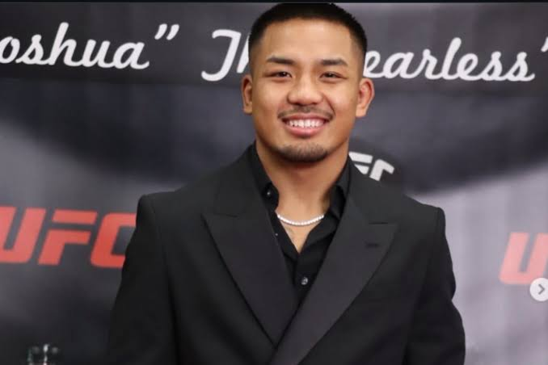

| Height | Weight | Division | Reach | Fighting out of | Team | Wins | Losses | Current Winstreak |
|---|---|---|---|---|---|---|---|---|
| 1.65m | 57kg | Flyweight | 165cm | Houston, Texas, U.S. | 4oz. Fight Club | 18 | 2 | 8 |
Van was born on October 10, 2001 in Hakha, in the Chin State of western Myanmar, to a family of five siblings. Due to a country ridden with military and political conflict, his family moved to Malaysia when he was ten. In 2013, at the age of twelve, Van migrated with his family to the United States, settling in Houston.[5][6]
Van made his amateur MMA debut in December 2020. He accumulated a 4-0 record (2 KOs) in the regional Texan promotion Fury FC before turning professional.[7]
Van made his professional MMA debut in October 2021. He continued to fight exclusively for Fury Fighting Championship, where he acquired a 7–1 record including in the main event of Fury FC 72 on December 18, 2022, where he submitted Cleveland McLean in the second round to win the promotion's Flyweight title.[8]
Van was scheduled to face Kevin Borjas on August 8, 2023, at Dana White's Contender Series 57, but he was pulled in order to face Zhalgas Zhumagulov at UFC on ABC 5 on June 24, 2023.[9] This made him the first Burmese fighter to sign with the Ultimate Fighting Championship.[5] He won the fight by split decision.[10]
The bout between Van and Borjas was rescheduled on November 11, 2023, at UFC 295.[11] He won the fight via unanimous decision.[12]
Van faced Felipe Bunes, replacing Denys Bondar on January 13, 2024, at UFC Fight Night 234.[13] He won the fight by second-round technical knockout.[14]
Van was scheduled to face Lucas Rocha, replacing Jose Johnson on April 6, 2024, at UFC Fight Night 240.[15] However, Rocha withdrew due to injury and the bout was scrapped.[16]
Van was scheduled to face Su Mudaerji on June 1, 2024, at UFC 302.[17] However, Su pulled out in late April due to undisclosed reasons and was replaced by Tatsuro Taira.[18][19] In turn, both fighters were moved to UFC on ESPN 58 on June 15, 2024 and Van ended up being scheduled to face Tagir Ulanbekov instead.[20] However, the bout was cancelled when Ulanbekov weighed in at 129.5 pounds, three and a half pounds over the flyweight non-title fight limit.[21]
Van faced Alexandre Pantoja for the UFC Flyweight Championship on December 6, 2025 at UFC 323.[37] Van defeated Pantoja by technical knockout 26 seconds into the first round when Pantoja sustained an arm injury from falling to the canvas, after having a kick attempt caught by Van. At 24 years old, Van became the second-youngest champion in UFC history, behind Jon Jones, and the first fighter born in the 2000s to win a UFC title.[38][39] He also became the UFC's second Asian-born male champion.[40]
Van was scheduled to make his first title defense against Tatsuro Taira on April 11, 2026 at UFC 327.[41] However, due to a knee injury, Van withdrew from the bout, so the bout was postponed to May 9, 2026 which took place at UFC 328.[42][43] He successfully defended the title and won the fight via technical knockout in the fifth round.[44] This fight earned him a $100,000 Fight of the Night award.[45]
Van defended his championship against Alexandre Pantoja in a rematch on September 19, 2026 at UFC 331.[46] He won the fight by unanimous decision.[47] This fight earned him another $100,000 Fight of the Night award.[48]
Källa:Wikipedia